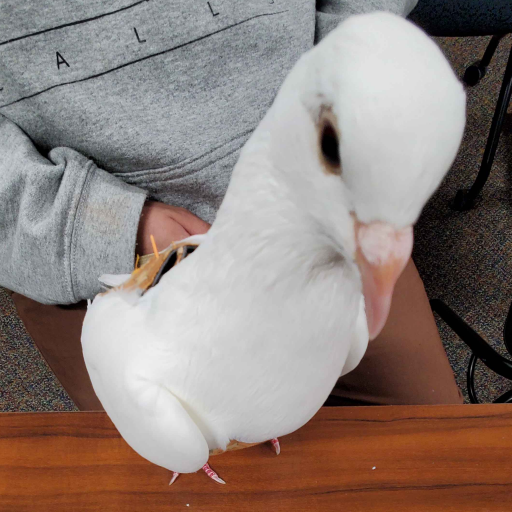
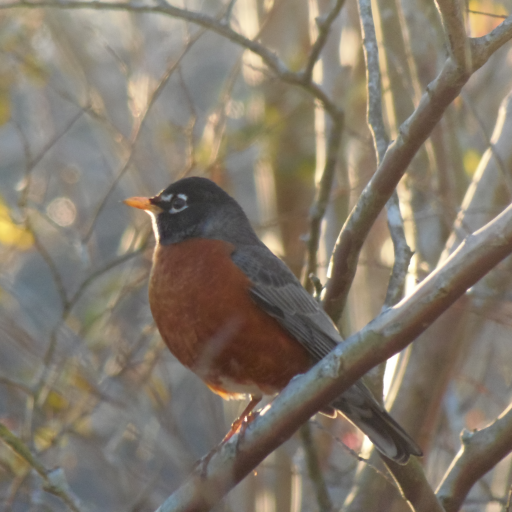
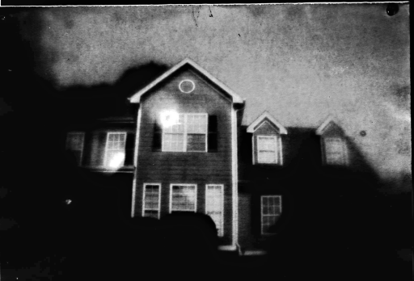

earth is kinda wacky tbh. it's got all sorts of interesting things going on with it.
click on a heading to expand that section
i fucking love birds; whoever invented them was really onto something
2023-11-13Red-tailed HawkUGA Campus, GA2024-02-25Red-bellied WoodpeckerUGA Botanical Gardens, GA2024-02-25Yellow-rumped WarblerUGA Botanical Gardens, GA2024-02-27Red-tailed HawkAthens, GA2024-03-13Eastern TowheeUGA Campus, GA2024-04-14Cliff SwallowsJuliette Park, GA2024-04-14Cliff SwallowsJuliette Park, GA2024-04-16Blue JaysUGA Campus, GA2024-06-09Eastern BluebirdAthens, GA2024-06-28Brown ThrasherAthens, GA2024-06-28Eastern BluebirdAthens, GA2024-06-28Mourning DovesAthens, GA2024-07-02Yellow-crowned Night HeronUGA Campus, GA2024-07-14MallardsOlympia, WA2024-07-15Sooty GrouseMt St Helens, WA2024-07-16American GoldfinchNisqually National Wildlife Refuge, WA2024-07-16American GoldfinchNisqually National Wildlife Refuge, WA2024-07-16KilldeerNisqually National Wildlife Refuge, WA2024-07-16Bald EagleNisqually National Wildlife Refuge, WA2024-07-16American CrowNisqually National Wildlife Refuge, WA2024-07-16Great Blue HeronNisqually National Wildlife Refuge, WA2024-07-16Great Blue HeronNisqually National Wildlife Refuge, WA2024-07-17Steller's JayMt Rainier, WA2024-07-17Steller's JayMt Rainier, WA2024-07-20American DipperOlympia, WA2024-07-22American RobinDeception Pass State Park, WA2024-09-11Northern MockingbirdUGA Campus, GA2024-10-27Great Blue HeronUGA Botanical Gardens, GA

2024-11-21Rock PigeonUGA Campus, GA2025-01-10Eastern PhoebeAthens, GA2025-02-08Northern FlickerClayton County Water Authority Wetland Center, GA2025-02-08Canada GeeseClayton County Water Authority Wetland Center, GA2025-02-08American CootsClayton County Water Authority Wetland Center, GA2025-02-08BuffleheadsClayton County Water Authority Wetland Center, GA2025-02-08Ring-necked DucksClayton County Water Authority Wetland Center, GA2025-02-08Great EgretClayton County Water Authority Wetland Center, GA2025-02-08Great EgretClayton County Water Authority Wetland Center, GA2025-02-08Bald EagleClayton County Water Authority Wetland Center, GA

2025-02-21American RobinAthens, GA2025-03-04Blue JayAthens, GA2025-03-04Brown ThrasherAthens, GA2025-03-04Rusty BlackbirdsAthens, GA2025-03-04Chipping SparrowAthens, GA2025-03-05Eastern BluebirdAthens, GA2025-03-05Eastern TowheeAthens, GA2025-03-05Eastern PhoebeAthens, GA2025-03-07House FinchAthens, GA2025-03-11Red-tailed HawkAthens, GA2025-03-15MallardsUGA Campus, GA2025-03-15Great Blue HeronUGA Campus, GA2025-03-15White-throated SparrowUGA Campus, GA2025-03-15Tufted TitmouseUGA Campus, GA2025-03-23Tree SwallowsPiedmont National Wildlife Refuge, GA2025-03-23Red-cockaded WoodpeckerPiedmont National Wildlife Refuge, GA2025-03-23Red-cockaded WoodpeckerPiedmont National Wildlife Refuge, GA2025-03-23Pine WarblerPiedmont National Wildlife Refuge, GA2025-03-23Great Blue HeronPiedmont National Wildlife Refuge, GA2025-03-23Northern Rough-winged SwallowsJuliette Park, GA2025-03-24Red-bellied WoodpeckerUGA Campus, GA2025-03-24Red-bellied Woodpecker + Eastern BluebirdUGA Campus, GA2025-03-27Turkey VultureUGA Campus, GA2025-04-13Ruby-throated HummingbirdUGA Botanical Gardens, GA2025-04-13Downy WoodpeckerUGA Botanical Gardens, GA2025-04-13Downy WoodpeckerUGA Botanical Gardens, GA2025-04-13Eastern TowheeUGA Botanical Gardens, GA
I 3D printed a camera as well as made my own film
More details can be found on another page I am yet to make

2024-10-27My home2024-11-28Princess Luna plush2024-12-13Pixel Eevee Lego2024-12-20Yoshi plush2025-01-25TI 84 Calculator